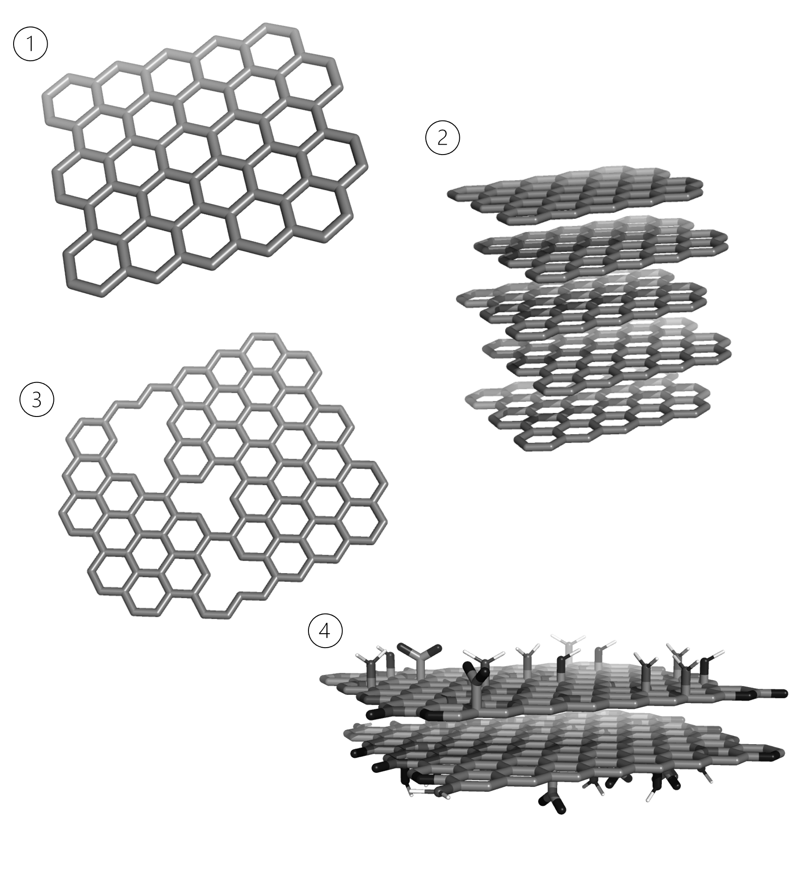

Carbons
In the next section, a brief description of the available methods to generate carbon models is provided. Following the previous work developed on CarbGen (you can check the Python version on the project's GitHub page), ProtoSyn implements methods to generate functionalized microcrystallites of multi-layered carbon sheets.

Figure 1 | Example showcase of ProtoSyn's carbon microcrystallite generation methods. 1 | Single carbon sheet. 2 | Multi-layered carbon microcrystallite. 3 | Micro-porosity generation. 4 | Functionalization. ProtoSyn includes several common functional groups, by default, on the ProtoSyn.modification_grammar. The shown example includes ether groups, carboxyls, carbonyls, hydroxyls, amine-N groups, graphitic-N, oxidized-N groups and pyridines.
ProtoSyn.Materials.generate_carbon_layer — Functiongenerate_carbon_layer(x::Int, y::Int; [r::T = 1.4]) where {T <: AbstractFloat}The carbon layer is generated using internal coordinates: all atoms are always placed at a distance r and angle of 120° from the parent atom, either with a clockwise or counter-clockwise rotation in the dihedral angle. For each ring added, 4 parameters need to be defined:
- The number of atoms to add (N);
- The selected atom to continue X expansion (X);
- The selected atom to continue Y expansion (Y);
- The bonds to add (B).
Such parameters are first compiled in 4 matrixes (1 for each) which are then consumed to generate the actual atom positions and bonds. This algorithm is, therefore, sensitive to the order of addition of layers (whether to add Y axis or X axis first, changes the N, X, Y and B matrixes, as well as rotation of dihedral angles). For this particular implementation, the X axis is added first, and all expansion is then added from this layer in the Y axis. As atoms are added, the next anchor atoms (as selected by the X and Y matrixes) are added to the A matrix. Each new ring checks this matrix for the next anchor/parent atom. All dihedral angles on the first atom of each new ring added are rotated by 180° (default is 0°), except on the first layer where the second atom added is also rotated by 180°. 6 possible bonding patterns are available:
- Bond 4th atom to start atom
- Bond 4th atom to 3rd atom of previous ring
- Bond 1st atom to 3rd atom of previous ring
- Bond 4th atom to parent of start atom
- Perform both 3 and 4 patterns simultaneously
- Bond 2nd atom to 1st atom of previous ring
Besides this "extra" bonds, all added atoms are bonded to the respective parent atom. Note that it's guaranteed that the main plane of the generated layer lies in the x-y plane (z cartesian coordinate = 0.0).
See also
Examples
julia> pose = ProtoSyn.Materials.generate_carbon_layer(5, 5)
Pose{Topology}(Topology{/CRV:65069}, State{Float64}:
Size: 70
i2c: false | c2i: false
Energy: Dict(:Total => Inf)
)ProtoSyn.Materials.generate_carbon — Functiongenerate_carbon(x::Int, y::Int, [z::Int = 0]; [r::T = 1.4], [d::T = 3.4]) where {T <: AbstractFloat}Generate a carbon microcrystallite with multiple carbon sheet layers (built using generate_carbon_layer with x and y dimensions for the number of carbon rings in the x- and y-axis, respectivelly, and r distance between atoms, in Å). The generated layers are copied z times (in the x-axis) with a distance of d Å. Every odd layer is displaced to match π-π stacking chemistry in carbon sheets.
See also
generate_porosity generate_carbon_from_file
Examples
julia> pose = ProtoSyn.Materials.generate_carbon(5, 5, 5)
Pose{Topology}(Topology{/CRV:23442}, State{Float64}:
Size: 350
i2c: false | c2i: false
Energy: Dict(:Total => Inf)
)ProtoSyn.Materials.generate_porosity — Functiongenerate_porosity(pose::Pose, pore_fraction::T; [clean_sweeps::Int = 15], [random::Bool = false], [neat_indexation::Bool = false]) where {T <: AbstractFloat}Generate porosity on the given Pose pose by removing Atom instances according to a generated Perlin noise (see the perlin method). The pore_fraction field ajusts the amount of Atom instances removed, as a value between 0.0 and 1.0.
The pose_fraction field cannot be roughly translated as a direct percentage value of Atom instances to remove. Instead, this value refers to the perlin noise level to consider for atom removal, and as such scales exponentially. As a baseline, a pore_fraction of 0.4 removes approximately 50% of the Atom instances in the given Pose.
For high pore_fraction values, the Atom removal may leave unconnected chains of Atom instances in each Segment. Such cases should be manually verified. Since this function is intended to be applied to carbon microcrystallites, these hanging atoms may constitute carbon atoms with wrong valency numbers. This method automatically performs clean_sweeps and removes any atom with 1 or 0 bonds. If random is set to true (false, by default), the generated noise is randomized. If neat_indexation is set to true (false, by default), the sort_atoms_by_graph! method is applied to reindex Atom instances and sort them according to the new graph (after removing Atom instances).
See also
Examples
julia> ProtoSyn.Materials.generate_porosity(pose, 0.405)
Pose{Topology}(Topology{/CRV:36031}, State{Float64}:
Size: 190
i2c: false | c2i: false
Energy: Dict(:Total => Inf)
)ProtoSyn.Materials.perlin — Functionperlin(x::T, y::T, z::T)Compute the perlin noise value at coordinates x, y and z. Taken from https://github.com/ararslan/ProceduralNoise.jl. All credit goes to ararslan. Based on https://gist.github.com/Flafla2/f0260a861be0ebdeef76. Hash lookup table as defined by Ken Perlin.
Examples
julia> ProtoSyn.Materials.perlin(0.5, 0.5, 0.5)
0.375ProtoSyn.Materials.perlinoctaves — Functionperlinoctaves(x::T, y::T, z::T, octaves::Int = 1, persistence::T = 1.0)Compute the perlin noise value at coordinates x, y and z with the given octaves. In sum, generates a perlin noise with some randomization. Taken from https://github.com/ararslan/ProceduralNoise.jl. All credit goes to ararslan. Based on https://gist.github.com/Flafla2/f0260a861be0ebdeef76. Hash lookup table as defined by Ken Perlin.
Examples
julia> ProtoSyn.Materials.perlinoctaves(0.5, 0.5, 0.5, 8)
0.484375ProtoSyn.Materials.functionalize! — Functionfunctionalize!(pose::Pose, functional_groups::Dict{Fragment, T}; normalize_frequencies::Bool = false) where {T <: AbstractFloat}Add N functional groups to the given Pose pose. The number of added functional groups is given by the functional groups dictionary, mapping Fragment instances (for example, from the default ProtoSyn.modification_grammar) to a percentage of achoring points available. By default, anchoring points are non-charged carbon Atom instances. If the normalize_frequencies flag is set to true (false, by default), ProtoSyn normalizes the input functional_groups dictionary so that all possible non-charged carbon Atom instances are functionalized (in proportional percentages to the input dictionary). Note that this method expects correctly ordered Segment instances (1 is bottom, :end is top).
functionalize!(pose::Pose, functional_groups::Dict{Fragment, Int})In an alternative syntax, the functional_groups fictionary directly maps Fragment instances to the actual number of desired functional groups to add.
See also
Examples
julia> ProtoSyn.Materials.functionalize!(pose, Dict(ProtoSyn.modification_grammar.variables["XYL"] => 10))
julia> pose
Pose{Topology}(Topology{/CRV:42474}, State{Float64}:
Size: 380
i2c: false | c2i: false
Energy: Dict(:Total => Inf)
)ProtoSyn.Materials.add_functionalization! — Functionadd_functionalization!(pose::Pose, fcn::Fragment, atom::Atom)Add a single functional group fcn (a Fragment instance) to the given Atom instance atom in the Pose pose. The Atom instance atom is replaced (using the replace_by_fragment! method).
See also
Examples
julia> ProtoSyn.Materials.add_functionalization!(pose, ProtoSyn.modification_grammar.variables["XYL"], pose.graph[1, 1, 16])
julia> pose
Pose{Topology}(Topology{/CRV:14425}, State{Float64}:
Size: 353
i2c: false | c2i: false
Energy: Dict(:Total => Inf)
)ProtoSyn.Materials.add_hydrogens! — FunctionProtoSyn.Materials.generate_carbon_from_file — Functiongenerate_carbon_from_file(filename::String, output::Opt{String} = nothing)Generate a functionalized carbon model from a .yml input file (named filename). If output is set to a String (nothing, by default), outputs the generated carbon model to a file. For an input file example, check the resources/Materials/carbon.yml file.
See also
Examples
julia> pose = ProtoSyn.Materials.generate_carbon_from_file("carbon.yml")
Pose{Topology}(Topology{/CRV:40141}, State{Float64}:
Size: 960
i2c: false | c2i: false
Energy: Dict(:Total => Inf)
)